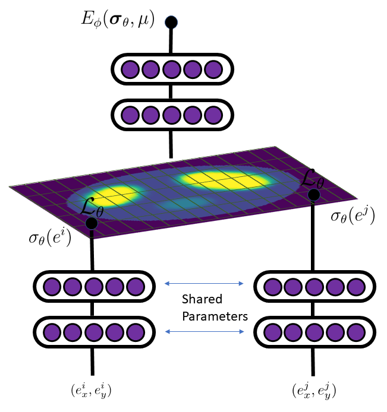

@inproceedings{
pokkunuru2023improved,
title={Improved Training of Physics-Informed Neural Networks Using Energy-Based Priors: a Study on Electrical Impedance Tomography},
author={Akarsh Pokkunuru and Amirmohmmad Rooshenas and Thilo Strauss and Anuj Abhishek and Taufiquar Khan},
booktitle={International Conference on Learning Representations},
year={2023},
url={https://openreview.net/forum?id=zqkfJA6R1-r}
}
Paper Versions
ICLR 2023
ML4PS Workshop
NeurIPS 2022
Abstract
Physics-informed neural networks (PINNs) are attracting significant attention for solving partial differential equation (PDE) based inverse problems, including electrical impedance tomography (EIT). EIT is non-linear and especially its inverse problem is highly ill-posed. Therefore, successful training of PINN is extremely sensitive to interplay between different loss terms and hyper-parameters, including the learning rate. In this work, we propose a Bayesian approach through datadriven energy-based model (EBM) as a prior, to improve the overall accuracy and quality of tomographic reconstruction. In particular, the EBM is trained over the possible solutions of the PDEs with different boundary conditions. By imparting such prior onto physics-based training, PINN convergence is expedited by more than ten times faster to the PDE’s solution. Evaluation outcome shows that our proposed method is more robust for solving the EIT problem.

Energy-Based Prior For Accelerating EIT PINNs
Summary

PINN Training Progression With and Without Our Energy-Based Prior
Insert details about the methodology used in your project here.
Results
Insert your project results here.